Changes in PRIMAP-hist v2.6.1_final compared to v2.6_final for Ghana
2025-03-19
Johannes Gütschow
Change analysis for Ghana for PRIMAP-hist v2.6.1_final compared to v2.6_final
Overview over emissions by sector and gas
The following figures show the aggregate national total emissions excluding LULUCF AR6GWP100 for the country reported priority scenario. The dotted linesshow the v2.6_final data.
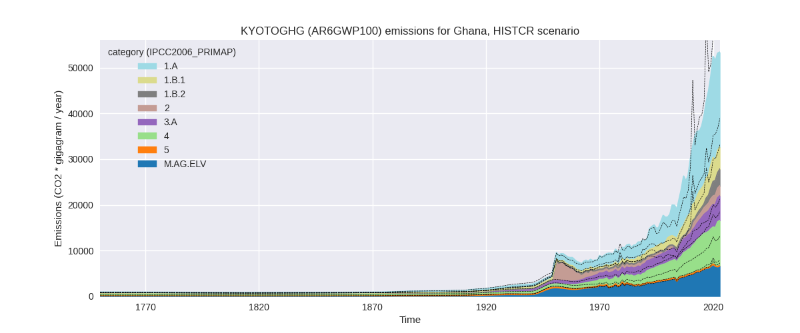
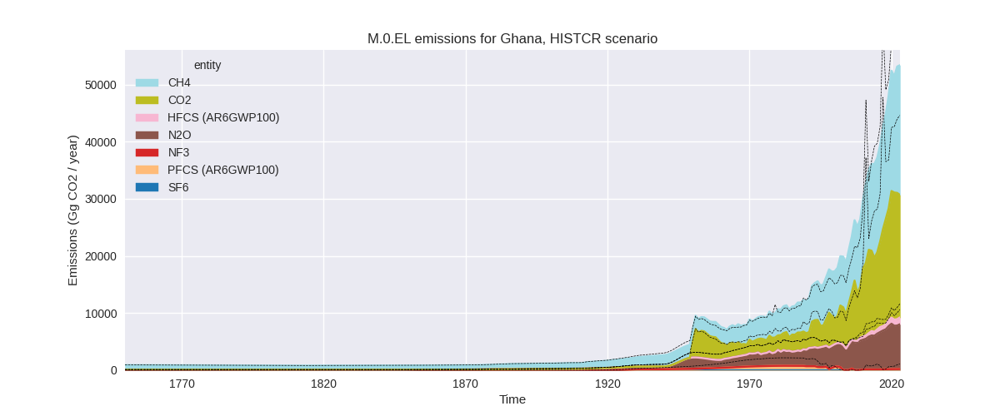
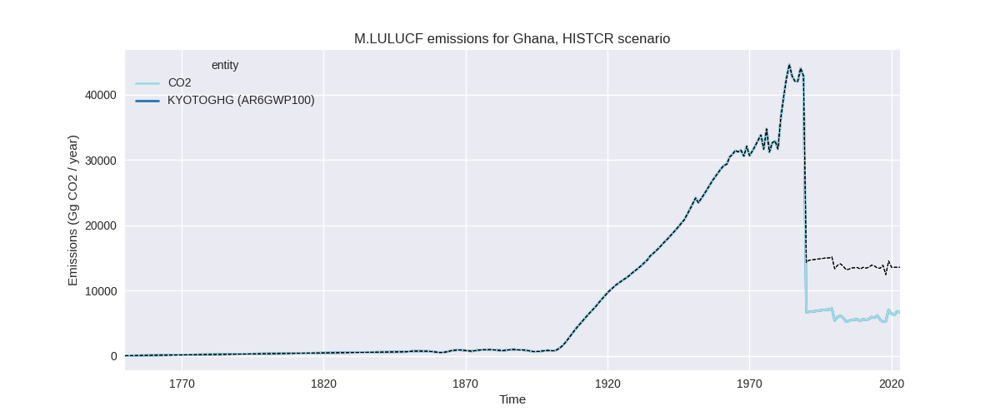
The following figures show the aggregate national total emissions excluding LULUCF AR6GWP100 for the third party priority scenario. The dotted linesshow the v2.6_final data.
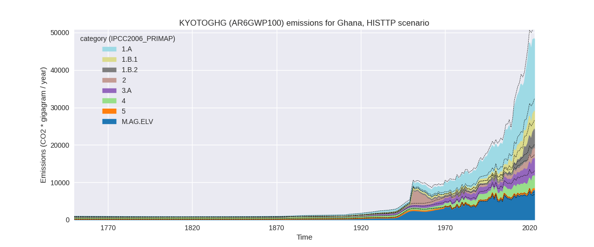
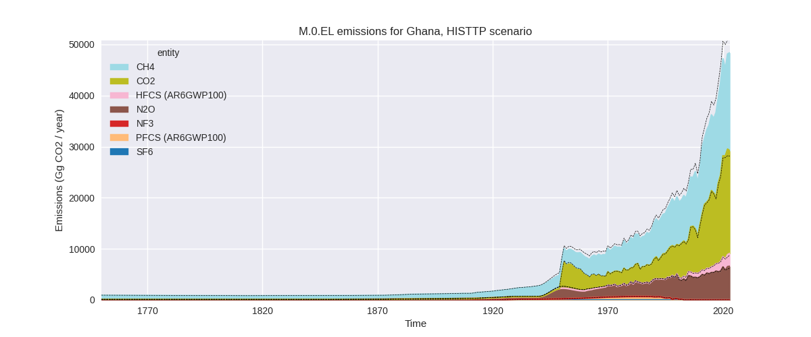
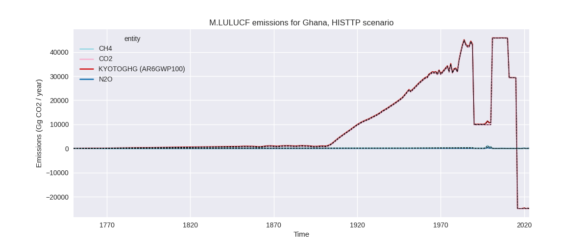
Overview over changes
In the country reported priority scenario we have the following changes for aggregate Kyoto GHG and national total emissions excluding LULUCF (M.0.EL):
- Emissions in 2023 have changed by -11.7%% (-7061.37 Gg CO2 / year)
- Emissions in 1990-2023 have changed by -2.8%% (-815.40 Gg CO2 / year)
In the third party priority scenario we have the following changes for aggregate Kyoto GHG and national total emissions excluding LULUCF (M.0.EL):
- Emissions in 2023 have changed by -6.4%% (-3297.01 Gg CO2 / year)
- Emissions in 1990-2023 have changed by -6.5%% (-1897.18 Gg CO2 / year)
Most important changes per scenario and time frame
In the country reported priority scenario the following sector-gas combinations have the highest absolute impact on national total KyotoGHG (AR6GWP100) emissions in 2023 (top 5):
- 1: 1.B.2, CO2 with -11580.69 Gg CO2 / year (-99.7%)
- 2: 4, CH4 with 3880.34 Gg CO2 / year (86.6%)
- 3: 1.B.2, CH4 with 3528.88 Gg CO2 / year (2889.4%)
- 4: 1.B.1, CH4 with -916.90 Gg CO2 / year (-16.1%)
- 5: 2, PFCS (AR6GWP100) with -910.19 Gg CO2 / year (-81.7%)
In the country reported priority scenario the following sector-gas combinations have the highest absolute impact on national total KyotoGHG (AR6GWP100) emissions in 1990-2023 (top 5):
- 1: 1.B.2, CO2 with -4051.01 Gg CO2 / year (-99.7%)
- 2: 4, CH4 with 2772.65 Gg CO2 / year (138.4%)
- 3: 1.A, CO2 with 752.24 Gg CO2 / year (8.3%)
- 4: 1.B.2, CH4 with 620.45 Gg CO2 / year (732.2%)
- 5: 5, N2O with -431.33 Gg CO2 / year (-95.0%)
In the third party priority scenario the following sector-gas combinations have the highest absolute impact on national total KyotoGHG (AR6GWP100) emissions in 2023 (top 5):
- 1: 4, CH4 with -2835.71 Gg CO2 / year (-54.9%)
- 2: 1.B.2, CH4 with -1409.34 Gg CO2 / year (-26.2%)
- 3: 1.B.1, CH4 with -916.90 Gg CO2 / year (-16.1%)
- 4: 4, CO2 with 683.26 Gg CO2 / year (2713.7%)
- 5: M.AG.ELV, N2O with 526.99 Gg CO2 / year (11.2%)
In the third party priority scenario the following sector-gas combinations have the highest absolute impact on national total KyotoGHG (AR6GWP100) emissions in 1990-2023 (top 5):
- 1: 4, CH4 with -1752.13 Gg CO2 / year (-50.5%)
- 2: 1.B.2, CH4 with -312.23 Gg CO2 / year (-20.8%)
- 3: 4, CO2 with 142.35 Gg CO2 / year (1823.9%)
- 4: 1.B.1, CH4 with -77.46 Gg CO2 / year (-2.7%)
- 5: 3.A, CH4 with 31.52 Gg CO2 / year (1.2%)
Notes on data changes
Here we list notes explaining important emissions changes for the country.
- CRT data from BTR1 has been added. It covers 1990-2022 and replaces
and extends NIR5 data.
- The main change for 2023 and cumulative emissions is a 99.7% reduction of fugitive CO2 (flaring). The emissions in BTE1 are much higher than in BUR4, but much lower than in NIR5 that was used in the last PRIMAP-hist version. CH4 in 1.B2 has strongly increased.
- Another important factor for the CR scenario are the higher waste CH4 emissions.
- Changes in the TP scenario are smaller. The main factor are lower CH4 emissions from waste, and fugitive emissions (from EDGAR). Waste CO2 is much higher. This change comes from CRT data as there is no third party source for waste CO2 emissions.
Changes by sector and gas
For each scenario and time frame the changes are displayed for all individual sectors and all individual gases. In the sector plot we use aggregate Kyoto GHGs in AR6GWP100. In the gas plot we usenational total emissions without LULUCF.
country reported scenario
2023
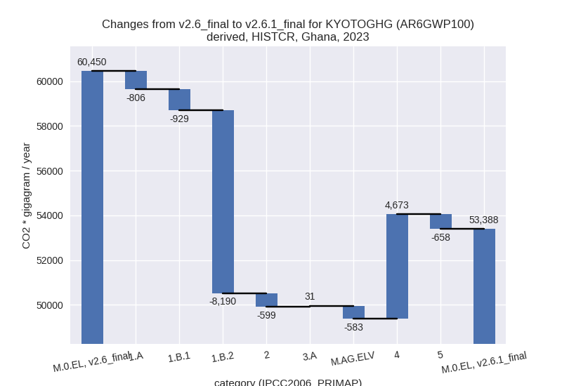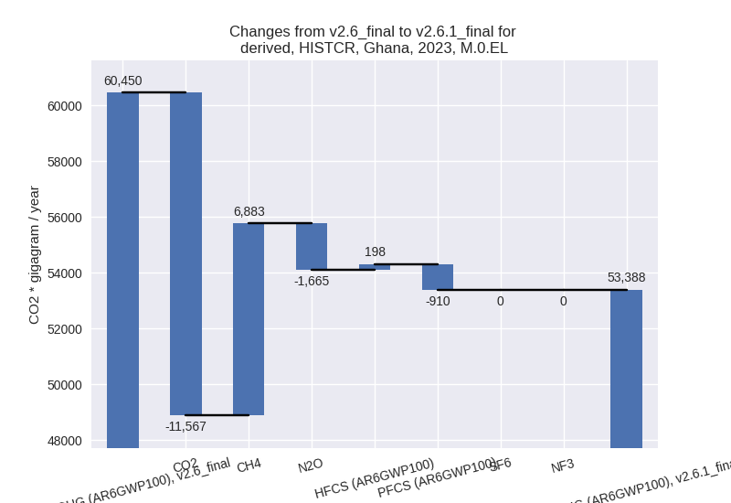
1990-2023
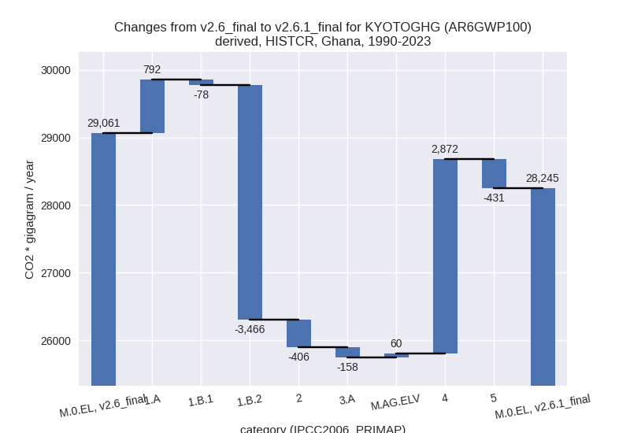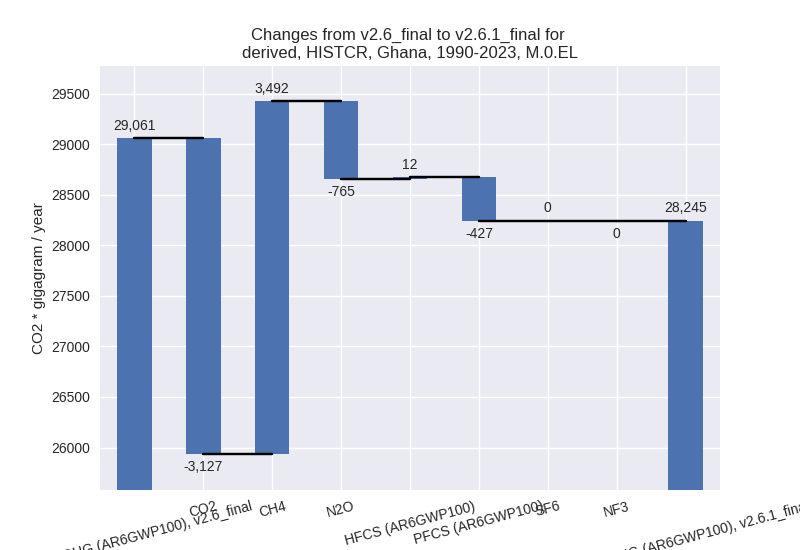
third party scenario
2023
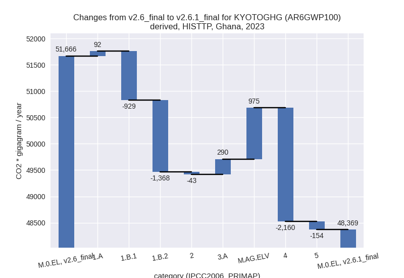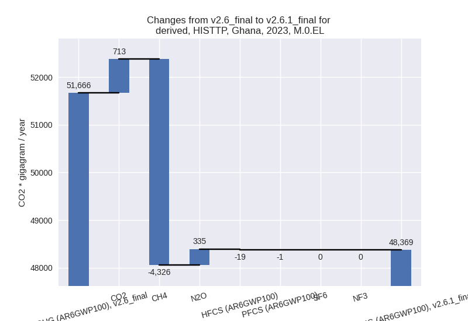
1990-2023
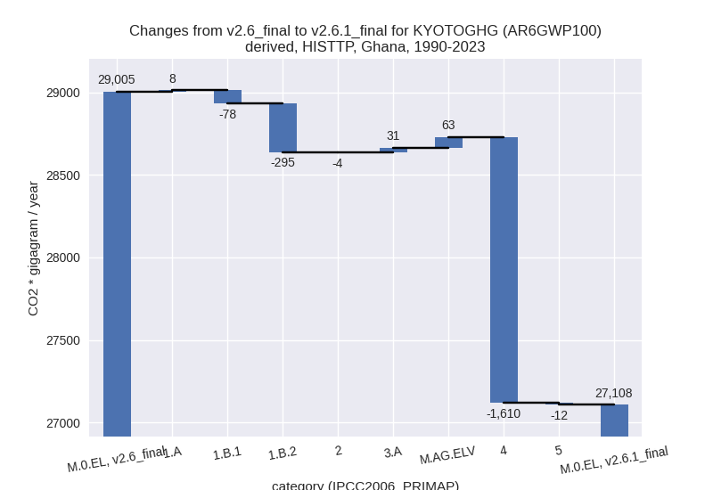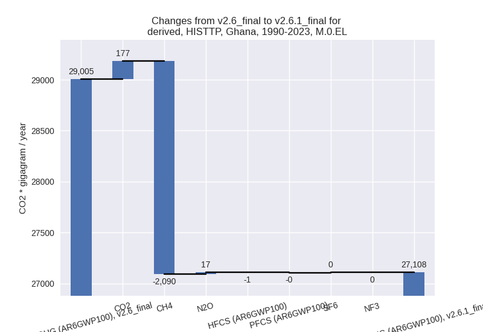
Detailed changes for the scenarios:
country reported scenario (HISTCR):
Most important changes per time frame
For 2023 the following sector-gas combinations have the highest absolute impact on national total KyotoGHG (AR6GWP100) emissions in 2023 (top 5):
- 1: 1.B.2, CO2 with -11580.69 Gg CO2 / year (-99.7%)
- 2: 4, CH4 with 3880.34 Gg CO2 / year (86.6%)
- 3: 1.B.2, CH4 with 3528.88 Gg CO2 / year (2889.4%)
- 4: 1.B.1, CH4 with -916.90 Gg CO2 / year (-16.1%)
- 5: 2, PFCS (AR6GWP100) with -910.19 Gg CO2 / year (-81.7%)
For 1990-2023 the following sector-gas combinations have the highest absolute impact on national total KyotoGHG (AR6GWP100) emissions in 1990-2023 (top 5):
- 1: 1.B.2, CO2 with -4051.01 Gg CO2 / year (-99.7%)
- 2: 4, CH4 with 2772.65 Gg CO2 / year (138.4%)
- 3: 1.A, CO2 with 752.24 Gg CO2 / year (8.3%)
- 4: 1.B.2, CH4 with 620.45 Gg CO2 / year (732.2%)
- 5: 5, N2O with -431.33 Gg CO2 / year (-95.0%)
Changes in the main sectors for aggregate KyotoGHG (AR6GWP100) are
- 1: Total sectoral emissions in 2022 are 29534.35 Gg
CO2 / year which is 55.6% of M.0.EL emissions. 2023 Emissions have
changed by -25.4% (-9925.79 Gg CO2 /
year). 1990-2023 Emissions have changed by -16.5% (-2752.34 Gg CO2 / year). For 2023
the changes per gas
are:
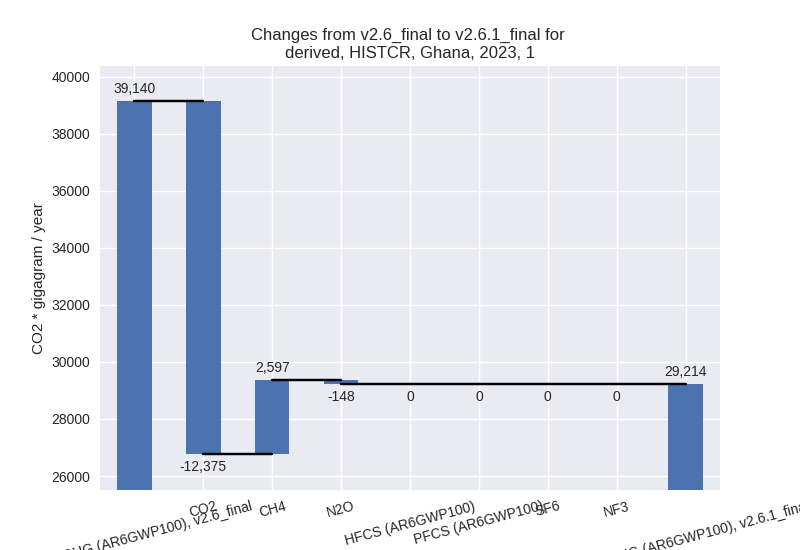
For 1990-2023 the changes per gas are:
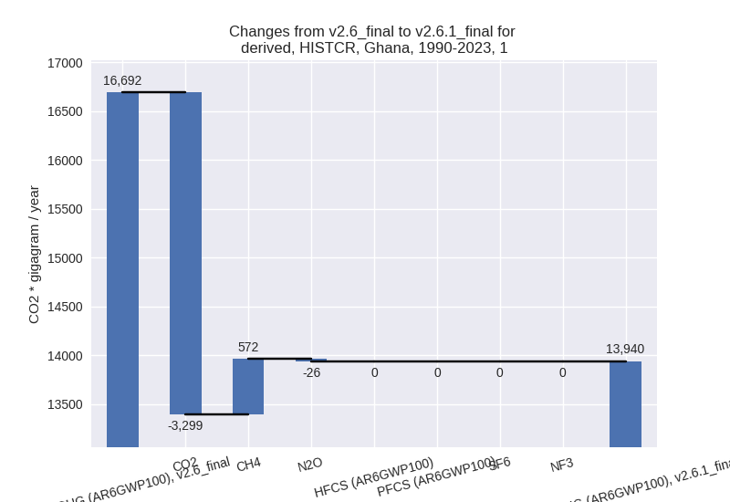
The changes come from the following subsectors:- 1.A: Total sectoral emissions in 2022 are 21300.00
Gg CO2 / year which is 72.1% of category 1 emissions. 2023 Emissions
have changed by -3.8% (-806.37 Gg
CO2 / year). 1990-2023 Emissions have changed by 8.3% (792.28 Gg CO2 / year). For 2023 the
changes per gas
are:
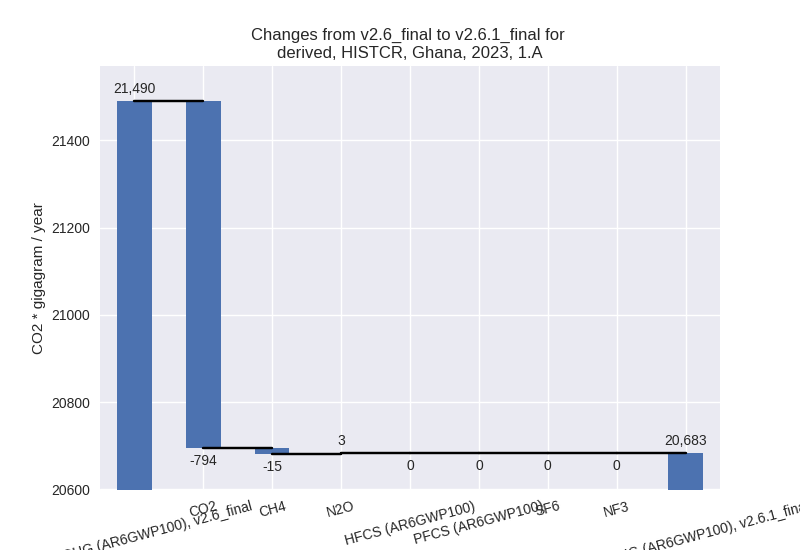
For 1990-2023 the changes per gas are:
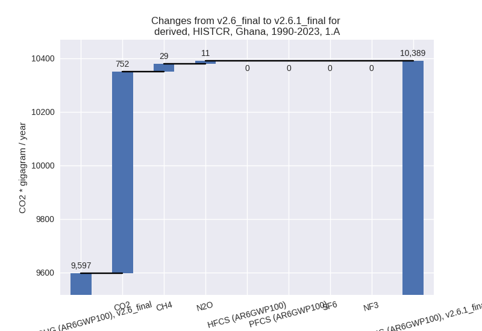
There is no subsector information available in PRIMAP-hist. - 1.B.1: Total sectoral emissions in 2022 are 4836.01
Gg CO2 / year which is 16.4% of category 1 emissions. 2023 Emissions
have changed by -16.1% (-929.06 Gg
CO2 / year). 1990-2023 Emissions have changed by -2.7% (-78.49 Gg CO2 / year). For 2023 the
changes per gas
are:
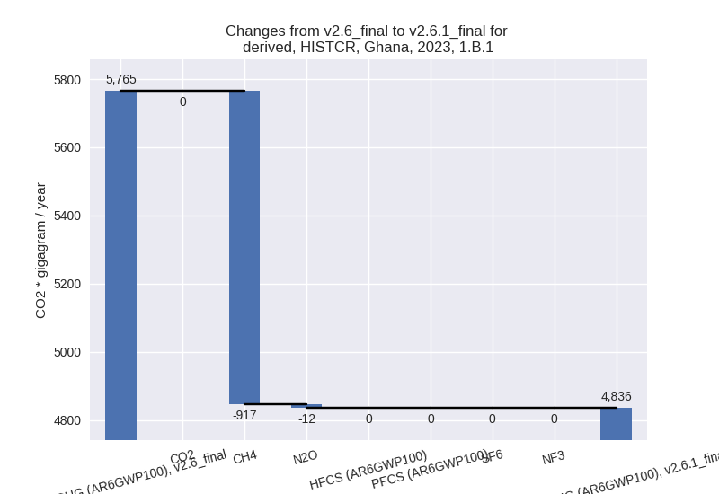
For 1990-2023 the changes per gas are:
There is no subsector information available in PRIMAP-hist. - 1.B.2: Total sectoral emissions in 2022 are 3398.35
Gg CO2 / year which is 11.5% of category 1 emissions. 2023 Emissions
have changed by -68.9% (-8190.36 Gg
CO2 / year). 1990-2023 Emissions have changed by -82.9% (-3466.13 Gg CO2 / year). For 2023
the changes per gas
are:
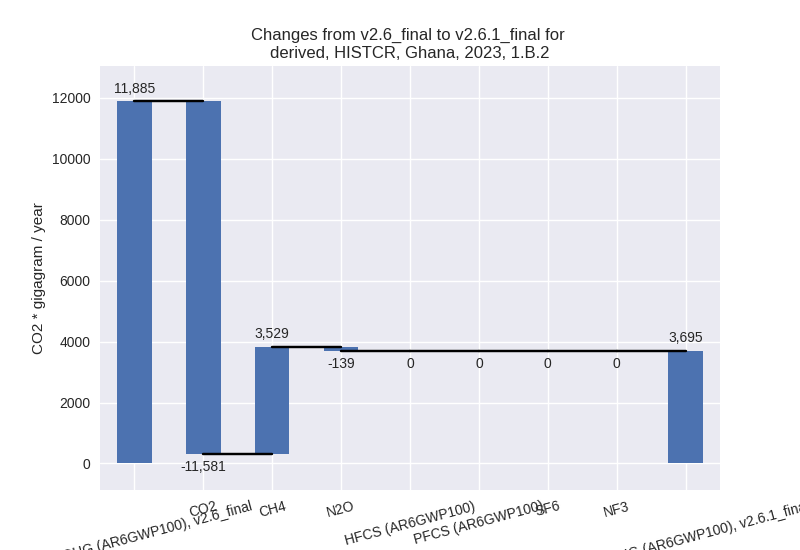
For 1990-2023 the changes per gas are:
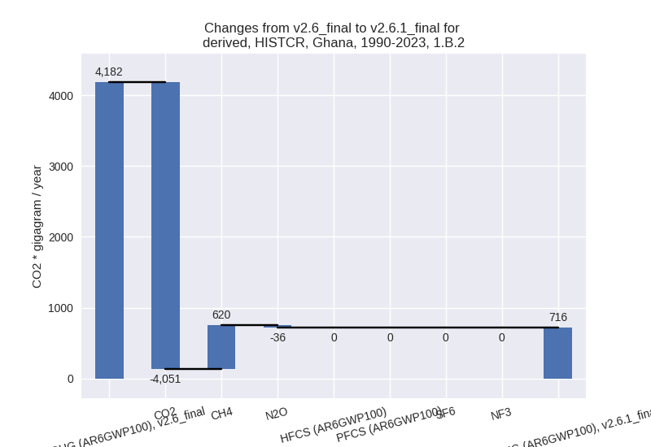
There is no subsector information available in PRIMAP-hist.
- 1.A: Total sectoral emissions in 2022 are 21300.00
Gg CO2 / year which is 72.1% of category 1 emissions. 2023 Emissions
have changed by -3.8% (-806.37 Gg
CO2 / year). 1990-2023 Emissions have changed by 8.3% (792.28 Gg CO2 / year). For 2023 the
changes per gas
are:
- 2: Total sectoral emissions in 2022 are 2093.35 Gg
CO2 / year which is 3.9% of M.0.EL emissions. 2023 Emissions have
changed by -21.5% (-598.61 Gg CO2 /
year). 1990-2023 Emissions have changed by -27.0% (-405.94 Gg CO2 / year). For 2023
the changes per gas
are:
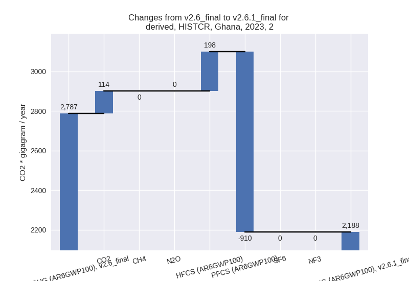
For 1990-2023 the changes per gas are:
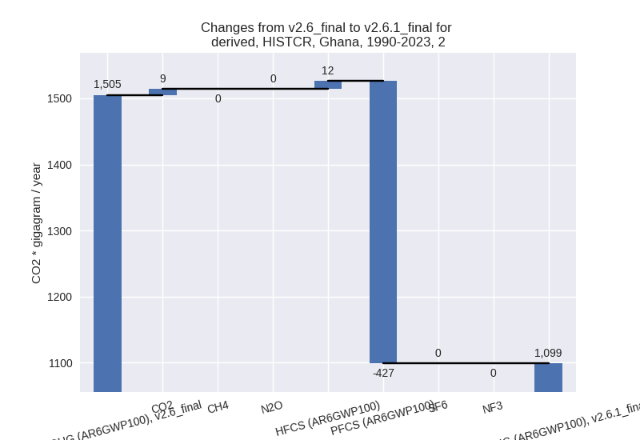 - M.AG: Total sectoral emissions in 2022 are 11756.28
Gg CO2 / year which is 22.1% of M.0.EL emissions. 2023 Emissions have
changed by -4.4% (-552.49 Gg CO2 /
year). 1990-2023 Emissions have changed by -1.2% (-97.62 Gg CO2 / year). For 2023 the
changes per gas
are:
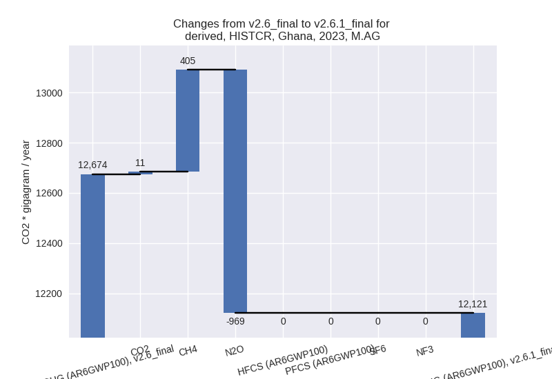
The changes come from the following subsectors:- 3.A: Total sectoral emissions in 2022 are 5255.74
Gg CO2 / year which is 44.7% of category M.AG emissions. 2023 Emissions
have changed by 0.6% (30.80 Gg CO2 /
year). 1990-2023 Emissions have changed by -4.6% (-157.69 Gg CO2 / year). For
1990-2023 the changes per gas
are:
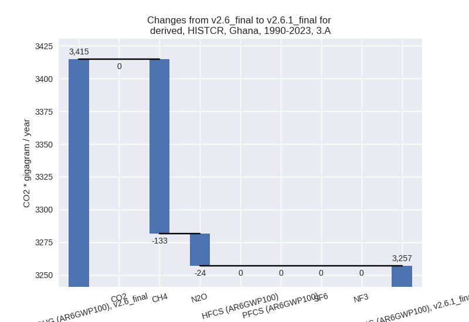
There is no subsector information available in PRIMAP-hist. - M.AG.ELV: Total sectoral emissions in 2022 are
6500.54 Gg CO2 / year which is 55.3% of category M.AG emissions. 2023
Emissions have changed by -8.0%
(-583.29 Gg CO2 / year). 1990-2023 Emissions have changed by 1.3% (60.07 Gg CO2 / year). For 2023 the
changes per gas
are:
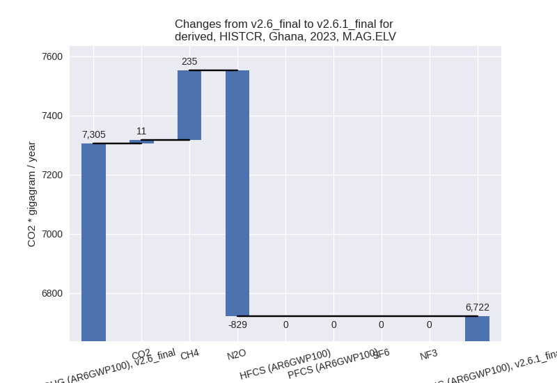
There is no subsector information available in PRIMAP-hist.
- 3.A: Total sectoral emissions in 2022 are 5255.74
Gg CO2 / year which is 44.7% of category M.AG emissions. 2023 Emissions
have changed by 0.6% (30.80 Gg CO2 /
year). 1990-2023 Emissions have changed by -4.6% (-157.69 Gg CO2 / year). For
1990-2023 the changes per gas
are:
- 4: Total sectoral emissions in 2022 are 9764.91 Gg
CO2 / year which is 18.4% of M.0.EL emissions. 2023 Emissions have
changed by 90.0% (4673.04 Gg CO2 /
year). 1990-2023 Emissions have changed by 115.7% (2871.83 Gg CO2 / year). For 2023
the changes per gas
are:
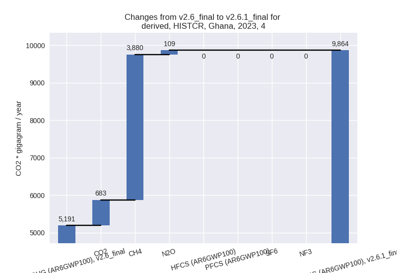
For 1990-2023 the changes per gas are:
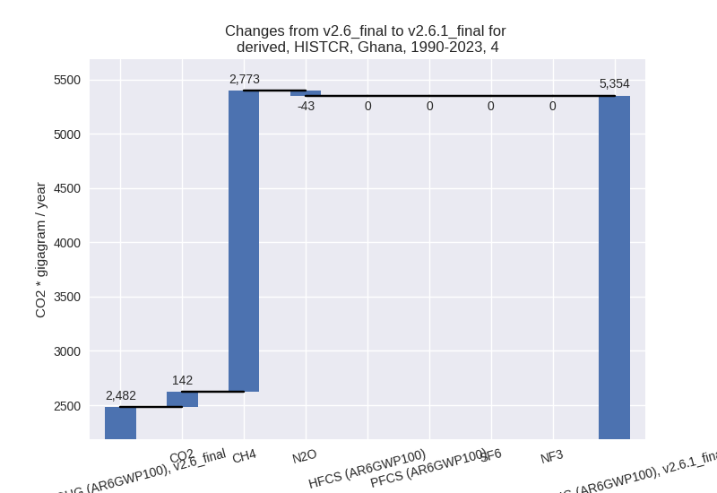 - 5: Total sectoral emissions in 2022 are 0.00 Gg CO2
/ year which is 0.0% of M.0.EL emissions. 2023 Emissions have changed by
-100.0% (-657.52 Gg CO2 / year).
1990-2023 Emissions have changed by -95.0% (-431.33 Gg CO2 / year). For 2023
the changes per gas
are:
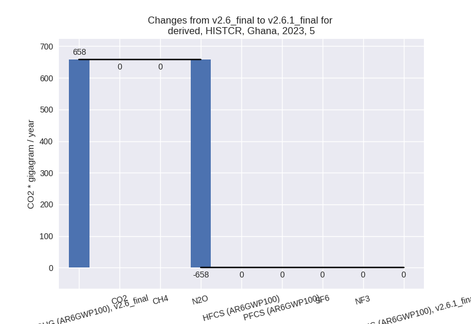
For 1990-2023 the changes per gas are:
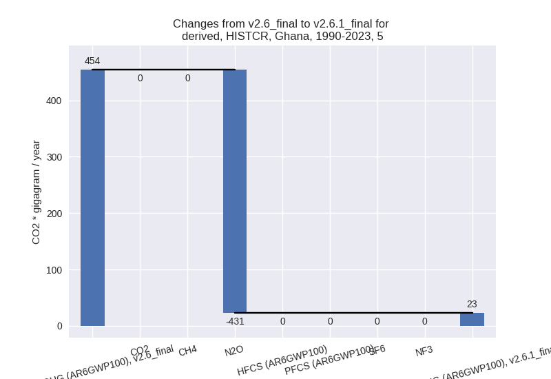
third party scenario (HISTTP):
Most important changes per time frame
For 2023 the following sector-gas combinations have the highest absolute impact on national total KyotoGHG (AR6GWP100) emissions in 2023 (top 5):
- 1: 4, CH4 with -2835.71 Gg CO2 / year (-54.9%)
- 2: 1.B.2, CH4 with -1409.34 Gg CO2 / year (-26.2%)
- 3: 1.B.1, CH4 with -916.90 Gg CO2 / year (-16.1%)
- 4: 4, CO2 with 683.26 Gg CO2 / year (2713.7%)
- 5: M.AG.ELV, N2O with 526.99 Gg CO2 / year (11.2%)
For 1990-2023 the following sector-gas combinations have the highest absolute impact on national total KyotoGHG (AR6GWP100) emissions in 1990-2023 (top 5):
- 1: 4, CH4 with -1752.13 Gg CO2 / year (-50.5%)
- 2: 1.B.2, CH4 with -312.23 Gg CO2 / year (-20.8%)
- 3: 4, CO2 with 142.35 Gg CO2 / year (1823.9%)
- 4: 1.B.1, CH4 with -77.46 Gg CO2 / year (-2.7%)
- 5: 3.A, CH4 with 31.52 Gg CO2 / year (1.2%)
Changes in the main sectors for aggregate KyotoGHG (AR6GWP100) are
- 1: Total sectoral emissions in 2022 are 29441.57 Gg
CO2 / year which is 61.2% of M.0.EL emissions. 2023 Emissions have
changed by -7.0% (-2204.19 Gg CO2 /
year). 1990-2023 Emissions have changed by -2.4% (-365.71 Gg CO2 / year). For 2023
the changes per gas
are:
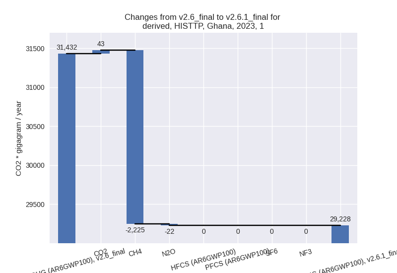
For 1990-2023 the changes per gas are:
The changes come from the following subsectors:- 1.A: Total sectoral emissions in 2022 are 19871.18 Gg CO2 / year which is 67.5% of category 1 emissions. 2023 Emissions have changed by 0.5% (92.50 Gg CO2 / year). 1990-2023 Emissions have changed by 0.1% (8.26 Gg CO2 / year).
- 1.B.1: Total sectoral emissions in 2022 are 4836.01
Gg CO2 / year which is 16.4% of category 1 emissions. 2023 Emissions
have changed by -16.1% (-929.06 Gg
CO2 / year). 1990-2023 Emissions have changed by -2.7% (-78.49 Gg CO2 / year). For 2023 the
changes per gas
are:
For 1990-2023 the changes per gas are:
There is no subsector information available in PRIMAP-hist. - 1.B.2: Total sectoral emissions in 2022 are 4734.38
Gg CO2 / year which is 16.1% of category 1 emissions. 2023 Emissions
have changed by -21.2% (-1367.63 Gg
CO2 / year). 1990-2023 Emissions have changed by -17.3% (-295.49 Gg CO2 / year). For 2023
the changes per gas
are:
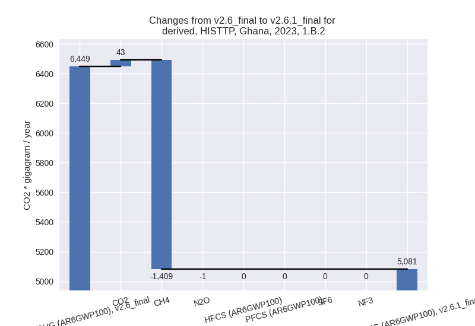
For 1990-2023 the changes per gas are:
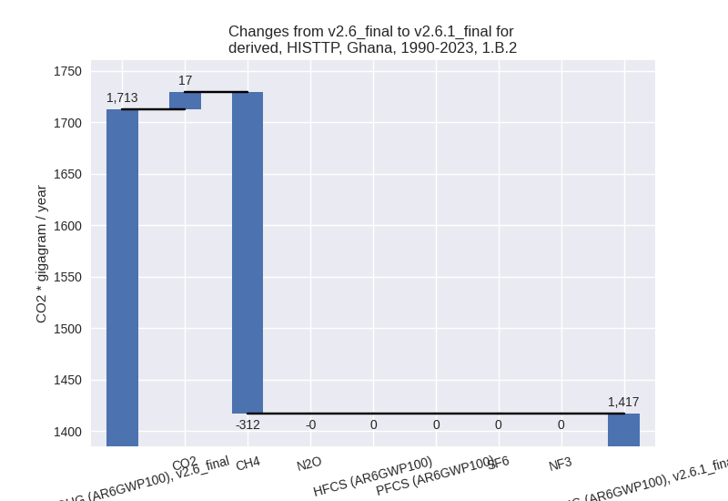
There is no subsector information available in PRIMAP-hist.
- 2: Total sectoral emissions in 2022 are 2545.68 Gg CO2 / year which is 5.3% of M.0.EL emissions. 2023 Emissions have changed by -1.6% (-43.38 Gg CO2 / year). 1990-2023 Emissions have changed by -0.3% (-4.06 Gg CO2 / year).
- M.AG: Total sectoral emissions in 2022 are 12103.15
Gg CO2 / year which is 25.1% of M.0.EL emissions. 2023 Emissions have
changed by 11.3% (1265.30 Gg CO2 /
year). 1990-2023 Emissions have changed by 1.1% (94.45 Gg CO2 / year). For 2023 the
changes per gas
are:
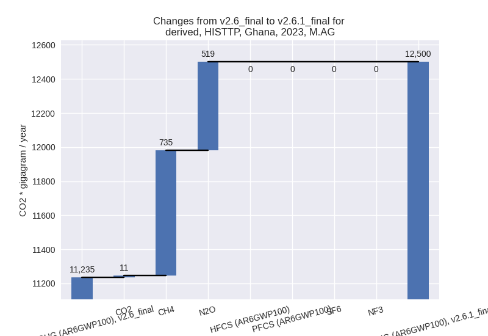
The changes come from the following subsectors:- 3.A: Total sectoral emissions in 2022 are 4511.22
Gg CO2 / year which is 37.3% of category M.AG emissions. 2023 Emissions
have changed by 6.7% (289.86 Gg CO2
/ year). 1990-2023 Emissions have changed by 1.1% (31.34 Gg CO2 / year). For 2023 the
changes per gas
are:
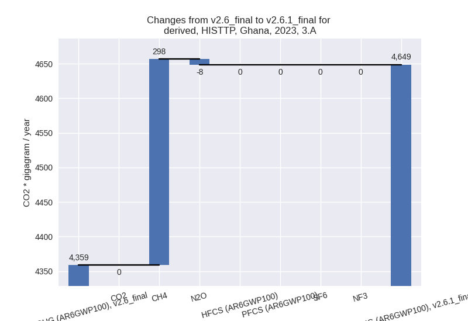
There is no subsector information available in PRIMAP-hist. - M.AG.ELV: Total sectoral emissions in 2022 are
7591.93 Gg CO2 / year which is 62.7% of category M.AG emissions. 2023
Emissions have changed by 14.2%
(975.44 Gg CO2 / year). 1990-2023 Emissions have changed by 1.1% (63.11 Gg CO2 / year). For 2023 the
changes per gas
are:
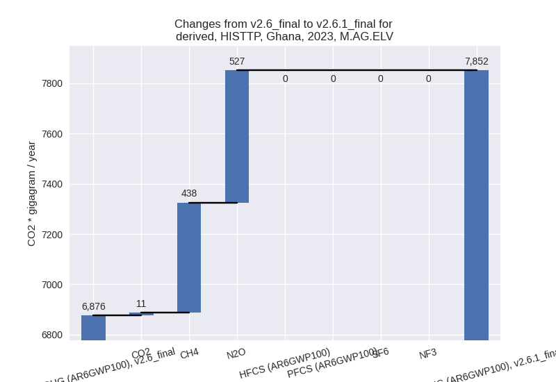
There is no subsector information available in PRIMAP-hist.
- 3.A: Total sectoral emissions in 2022 are 4511.22
Gg CO2 / year which is 37.3% of category M.AG emissions. 2023 Emissions
have changed by 6.7% (289.86 Gg CO2
/ year). 1990-2023 Emissions have changed by 1.1% (31.34 Gg CO2 / year). For 2023 the
changes per gas
are:
- 4: Total sectoral emissions in 2022 are 3428.17 Gg
CO2 / year which is 7.1% of M.0.EL emissions. 2023 Emissions have
changed by -38.8% (-2160.31 Gg CO2 /
year). 1990-2023 Emissions have changed by -43.4% (-1610.23 Gg CO2 / year). For 2023
the changes per gas
are:
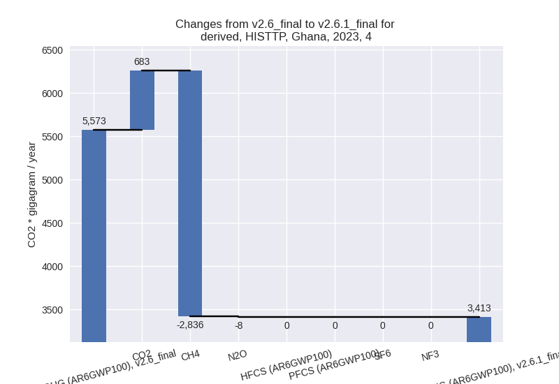
For 1990-2023 the changes per gas are:
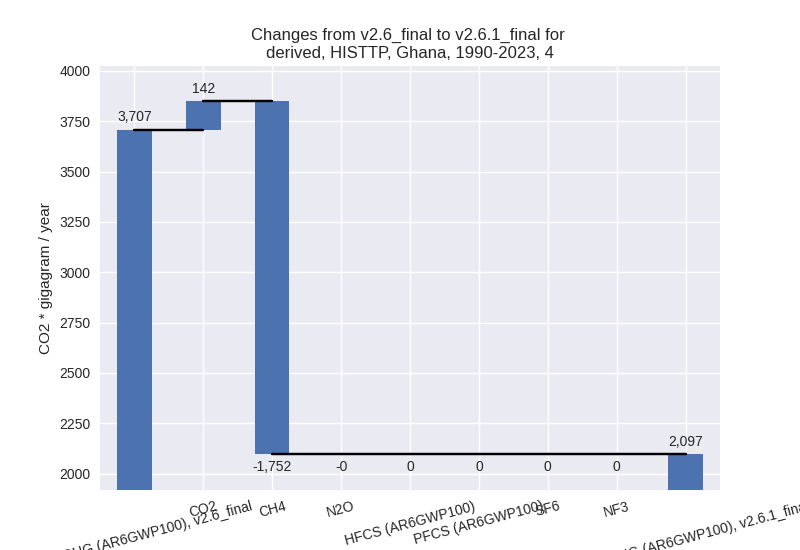 - 5: Total sectoral emissions in 2022 are 612.33 Gg
CO2 / year which is 1.3% of M.0.EL emissions. 2023 Emissions have
changed by -23.5% (-154.43 Gg CO2 /
year). 1990-2023 Emissions have changed by -2.6% (-11.63 Gg CO2 / year). For 2023 the
changes per gas
are:

For 1990-2023 the changes per gas are:
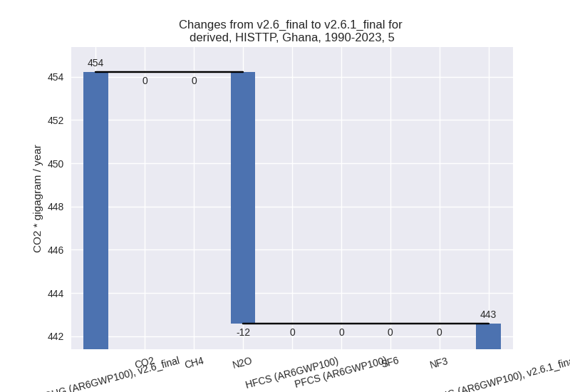